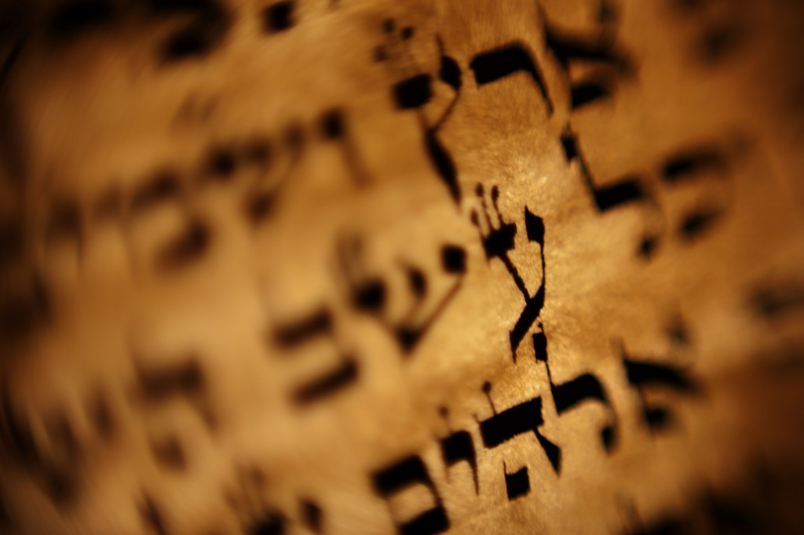
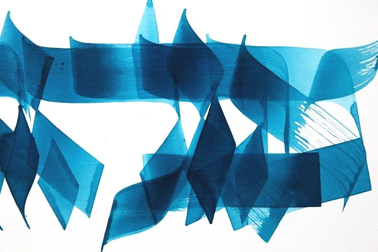
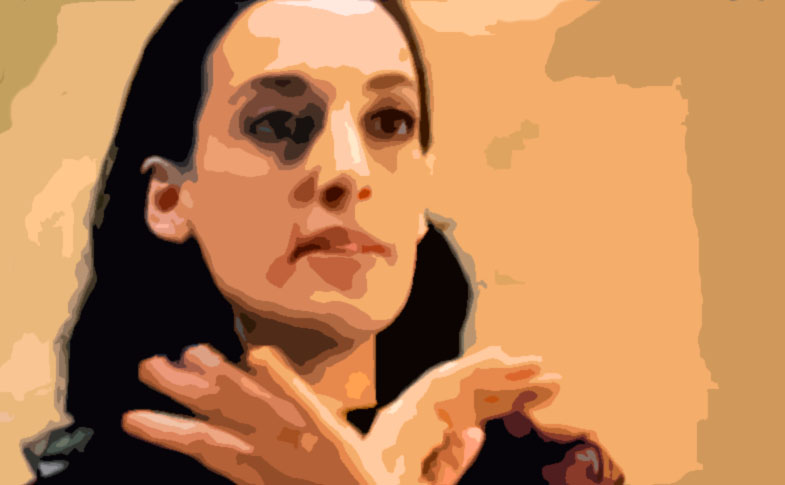

Язык Библии · Библия и художник
МУЗЫКА ЕВРЕЙСКИХ ТЕКСТОВ. Виктория Хана
Виктория Хана: Я считаю, что мое творчество может быть воспринято разными людьми, а не только так называемыми «хранителями искусств, пребывающими в храме, наполненном курениями».
Первую часть интервью см. здесь: "Сокровища ивритских слов Виктории Хана"
Виктория Хана
Дов Эльфон: Как бы вы охарактеризовали вашу музыку для тех, кто не подготовлен ее слушать?
Виктория Хана: Большая часть текстов, с которыми я работаю, - очень известные тексты: тексты связанные с ритуалами изучения Алеф-Бет (еврейского алфавита), тексты книги «Йецира» (Книга Творения), где сказано, что весь мир сотворен словом, вышедшим из уст Всевышнего. Я обращаюсь также к текстам «Шир а-Ширим» (Песня Песней).
С этим текстами я могу прийти в клуб в Нью-Йорке, к людям совершенно светским, и преподать их в современной манере, сделать из них музыку рэп. В других случаях вы можете найти меня с теми же самыми текстами в доме престарелых. Это могут быть совершенно религиозные люди, пригласившие меня. И я стою в столовой, где собираются эти люди, и исполняю акапелло, без какого-то сопровождения и пою для них те же самые тексты. И слезы появляются на их глаза, потому что они хорошо знакомы с этими текстами, очень близкими для них.
Дов Эльфон: Вы выросли в Иерусалиме в религиозной семье, ваш отец был раввином. Так что я предполагаю, что по-началу вы пели исключительно молитвы?

Виктория Хана: Не только пела, но каждое утро с первого класса я перебирала губами. Подобно упражнениям у станка в балете. Это особенные тексты, произносимые каждый день. И потому каждое утро я перебирала губами, не выпуская звука из уст.
Дов Эльфон: Когда же появился голос?
Виктория Хана: Когда появился голос? Вы знаете, в детстве у меня были проблемы с речью, мне было тяжело говорить, я заикалась. До сих пор остались следы этого. И когда, например, дети надо мной смеялись, я начинала петь Богу. Я поднималась на камень и пела Ему, потому, что я верила – только Он может мне помочь.
И все это соединение желания выразить и сказать что-то, что застревает в твоем горле со способностью, которая возникает вдруг – послать свой голос в направлении, не связанном с происходящим здесь и сейчас. Все эти тексты, постоянно проговариваемые в моих устах... Я должна была двигать своими губами чтобы позволить им родиться и произвести нечто. Все это придало большое вдохновение тому, чем я занимаюсь сегодня.
Дом моего отца наполнен книгами. Вы входите кругом, и повсюду книги. Эти буквы, страницы... Я так люблю их запах. Это нечто, сберегаемое в моем рту. И это желание – взять эти потрясающие тексты и открыть их, говорить и питаться ими.
Дов Эльфон: Эта ваша ультра современная музыка вряд ли может подойти по формату к тому, что вещается сегодня на радио волнах Израиля. Как вы на это реагируете?

Виктория Хана: Некоторые предлагают мне сделать нечто более приемлимое: куплет – припев, куплет – припев. Сделай из твоих материалов что-то подобное, чтобы это можно было транслировать по радио. Для меня радио – своего рода пространство. Я считаю, что мое творчество может быть воспринято разными людьми, а не только так называемыми «хранителями искусств, пребывающими в храме, наполненном курениями».
Дов Эльфон: Ваш успех приводит вас в неожиданные места. Это вас удивляет?
Виктория Хана: Очень. Мне очень любопытно слышать работу голоса и губ в разных культурах. Например, я был в Монголии. Там я работала с одним монгольским певцом в его деревне. И там я пела для всех жителей этой деревни.
Мне довелось также побывать на Украине. И там я стала свидетельницей того, как разные бабушки поют, чтобы нечто осуществилось.
Дов Эльфон: Если ваш успех будет развиваться в том же темпе, то ваша музыка может превратиться в мейнстрим израильской музыки.
Виктория Хана: Мне очень интересно коммуницировать, ведь голос – это инструмент коммуникации. И меня очень радует, что люди открываются для этих текстов. И если мое творчество будет воспринято, я не буду чувствовать себя столь одинокой.
СМ. ВИДЕО-ИНТЕРВЬЮ ЗДЕСЬ

.Видео переведено и дублировано: Эфраим Калиштакже читайте о Виктории Хана и ее творчестве здесь:
"Сокровища ивритских слов Виктории Хана"